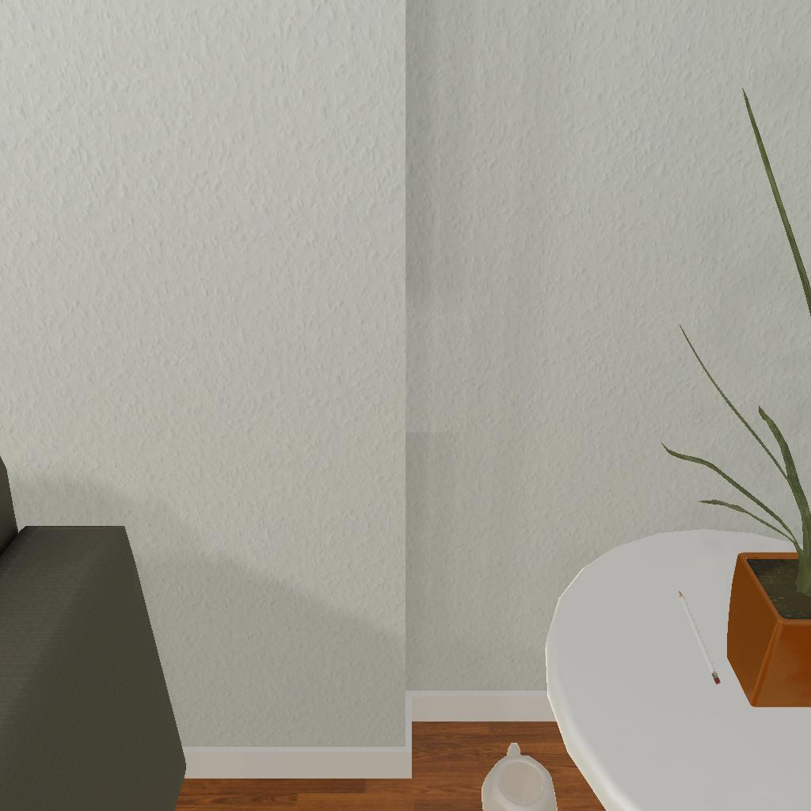

---------------------------------------------------------task: 5---------------------------------------------------------
--------------------------------------------------------------------------------------------------------------------------------------------------------------------
--------------------------------------------------------------------------------------------------------------------------------------------------------------------
Step:--------------------------------------------------------------------------3-------------------------------------------------------------------------------
----------------------------------------
VLM Prompt:
**Task**
Please perform as an embodied AI agent. Our final objective is to put some book on armchair. Below is the plan for completing the task, the current observation, alongside historical data and admissible actions for the next step. Please determine the best action for the next step!
**Plan**
Below is a detailed step-by-step plan to complete the task.
1. Find a book.
2. Pick up the book.
3. Find an armchair.
4. Place the picked-up book on the armchair.
5. Find another book.
6. Pick up the book.
7. Return to the previously located armchair.
8. Place the picked-up book on the armchair with the first book.
**Current Observation**
Displayed is an image capturing the current position of the agent.
**History Information**
Displayed are the previous observations with their corresponding actions.
Current State 1:
1. Place: Sofa area
2. Step Index in Plan: 1
3. Objects: Sofa, cardboard box, smartphone
4. Action: Go to armchair 1
Current State 2:
1. Place: Sofa area
2. Step Index in Plan: 1
3. Objects: Sofa, cardboard box, smartphone
4. Action: Go to drawer 1
Current State 3:
1. Place: Unknown
2. Step Index in Plan: First step
3. Objects: Sofa, side table, coffee table
4. Action: Go to sidetable 1
**Admissible Actions**
(1): go to armchair 1
(2): go to sofa 1
(3): go to coffeetable 1
(4): go to dresser 1
(5): go to drawer 2
(6): go to drawer 3
(7): go to drawer 4
(8): go to sidetable 2
(9): go to sidetable 3
(10): take houseplant 1 from sidetable 1
(11): take wateringcan 1 from sidetable 1
(12): take pencil 1 from sidetable 1
**Analysis Guideline**
1. Analyze the **History Information** and determine our current step in the plan and our current place.
2. List all visible objects related to the task in the current observation.
3. Analyze the objects in the current observation based on the history and the requirements for the current step, and then determine if we can complete the step with the current observation.
4. Analyze and decide on the most appropriate action to take.
5. Summarize the analysis using the following format: "Analysis: [The summarization of the analysis], The Most Appropriate Action: (i which is the integer.): [Selected action]"
**Notes**
1. We must complete each step of the plan in order and cannot skip steps when the previous ones are not finished.
2. For "Go to" actions listed as "go to xxx [n]", interpret this as there are n distinct actions available: "go to xxx 1", "go to xxx 2", ..., "go to xxx n". Select one specific action from these options instead of using "go to xxx [n]".
3. If receptacles such as drawers, cabinets, and so forth are closed in the current observation, we may try to open them.
4. Pay attention to synonyms and ensure clarity in the terms used.
5. If there is no history available, we are at the first step and the current place is "Unknown".
6. The most appropriate action must be in the **Admissible Actions**, and we cannot generate a new action that is not in the **Admissible Actions**.
**Answer**
Please select the most suitable action by following the **Analysis Guideline**, keeping the above **Notes** in mind.
----------------------------------------
----------------------------------------
VLM Response:
Analysis: Based on the History Information, we are currently at step 1 of the plan, which is to find a book. The current observation does not display any books, so we cannot complete this step with the current observation. From the admissible actions, the most appropriate action would be to go to another location where a book might be found. Since the action "go to armchair 1" has been mentioned in the history and we are supposed to find a book before going to the armchair, it is not the appropriate action at this point. We should consider other options that could potentially have a book.
The Most Appropriate Action: (4): go to dresser 1
----------------------------------------
----------------------------------------
>>> Refine VLM Response and Get Pure Action: go to dresser 1
----------------------------------------
-----------------------------------------------------------------
Running time: 11.065051555633545 seconds
Total Money: 1.9608299999999999
-----------------------------------------------------------------
-----------------------------------------------------------------
Summarization Prompt:
**Context**
Analysis: Based on the History Information, we are currently at step 1 of the plan, which is to find a book. The current observation does not display any books, so we cannot complete this step with the current observation. From the admissible actions, the most appropriate action would be to go to another location where a book might be found. Since the action "go to armchair 1" has been mentioned in the history and we are supposed to find a book before going to the armchair, it is not the appropriate action at this point. We should consider other options that could potentially have a book.
The Most Appropriate Action: (4): go to dresser 1
**Summary Format**
1. Place: [Specify the current location]
2. Step Index in Plan: [Dispkay the current step number in the plan before taking the current action]
3. Objects: [List the objects relevant to the task]
4. Action: [Describe the most appropriate action without the "(x)" and keep the integer of the object]
Please analyze the **Context** and summarize the analysis using the **Summary Format**.
-----------------------------------------------------------------
-----------------------------------------------------------------
Summarization Response:
1. Place: Not specified in the context provided
2. Step Index in Plan: 1
3. Objects: None observed/relevant to the current task
4. Action: Go to dresser 1
-----------------------------------------------------------------
-----------------------------------------------------------------
Text Observation:You arrive at loc 5. On the dresser 1, you see a television 1, a book 1, and a tissuebox 1.
-----------------------------------------------------------------
UNSUCCEED